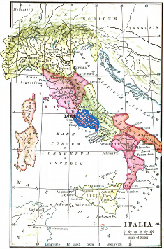

DATE
SALVE!
Welcome to Athene Noctua! As you progress through the lessons, you will learn to read Latin. Let's begin with a brief introduction of the Latin language and its usefulness, taken from Benjamin D'Ooge's 1911 Latin for Beginners:
What is Latin? If you will look at the map of Italy below, you will find marked in blue near the middle of the peninsula and facing the west coast a district called Latium (pronounced Lā-shĭ-ŭm), and Rome its capital. The Latin language, meaning the language of Latium, was spoken by the ancient Romans and other inhabitants of Latium, and Latin was the name applied to it after the armies of Rome had carried the knowledge of her language far beyond its original boundaries. As the English of to-day is not quite the same as that spoken two or three hundred years ago, so Latin was not always the same at all times, but changed more or less in the course of centuries. The sort of Latin you are going to learn was in use about two thousand years ago. And that period has been selected becaue the language was then at its best and the greatest works of Roman literature were being produced. This period, because of its supreme excellence, is called the Golden Age of Roman letters.
The Spread of Latin. For some centuries after Rome was founded, the Romans were a feeble and insignificant people, their territory was limited to Latinum, and their existence constantly threatened by warlike neighbors. But after the third century before Christ, Rome's power grew rapidly. She conquered all Italy, then reached out for the lands across the sea and beyond the Alps, and finally ruled over the whole ancient world. The empire thus established lasted for more than four hundred years. The importance of Latin increased with the growth of Roman power, and what had been a dialect spoken by a single tribe became the universal language. Gradually the language changed somewhat, developing differently in different countries. In Italy it has become Italian, in Spain Spanish, and in France French. All these nations, therefore, are speaking a modernized form of Latin.
The Romans and the Greeks. In their career of conquest the Romans came into conflict with the Greeks. The Greeks were inferior to the Romans in military power, but far superior to them in culture. They excelled in art, literature, music, science, and philosophy. Of all these pursuits the Romans were ignorant until contact with Greece revealed to them the value of education and filled them with the thirst for knowledge. And so it came about that while Rome conquered Greece by force of arms, Greece conquered Rome by force of her intellectual superiority and became her schoolmaster. It was soon the established custom for young Romans to go to Athens and to other centers of Greek learning to finish their training, and the knowledge of the Greek language among the educated classes became universal. At the same time many cultured Greeks - poets, artists, orators, and philosophers - flocked to Rome, opened schools, and taught their arts. Indeed, the preëminence of Greek culture became so great that Rome almost lost her ambition to be original, and her writers vied with each other in their efforts to reproduce in Latin what was choicest in Greek literature. As a consequence of all this, the civilization and national life of Rome became largely Grecian, and to Greece she owed her literature and her art.
Rome and the Modern World. After conquering the world, Rome impressed her language, laws, customs of living, and modes of thinking upon the subject nations, and they became Roman; and the world has remained largely Roman ever since. Latin continued to live, and the knowledge of Latin was the only light of learning that burned steadily through the dark ages that followed the downfall of the Roman Empire. Latin was the common language of scholars and remained so even down to the days of Shakespeare. Even yet it is more nearly than any other tongue the universal language of the learned. The life of to-day is much nearer the life of anceint Rome than the lapse of centuries would lead one to suppose. You and I are Romans still in many ways, and if Caesar and Cicero should appear among us, we should not find them, except for dress and language, much unlike men of to-day.
Latin and English. Do you know that more than half of the words in the English dictionary are Latin, and that you are speaking more or less Latin every day? How has this come about? In the year 1066 William the Conqueror invaded England with an army of Normans. The Normans spoke French — which, you remember, is descended from Latin — and spread their language to a considerable extent over England, and so Norman-French played an important part in the formation of English and forms a large proportion of our vocabulary. Furthermore, great numbers of almost pure Latin words have been brought into English through the writings of scholars, and every new scientific discovery is marked by the addition of new terms of Latin derivation. Hence, while the smipler and commoner words of our mother tongue are Anglo-Saxon, and Anglo-Saxon forms the staple of our colloquial language, yet in the realms of literature, and especially in poetry, words of Latin derivation are very abundant. Also in the learned professions, as in law, medicine, and engineering, a knowledge of Latin is necessary for the successful interpretation of technical and scientific terms.
Why study Latin? The foregoing paragraphs make it clear why Latin forms so important a part of modern education. We have seen that our civilization rests upon that of Greece and Rome, and that we must look to the past if we would understand the present. It is obvious, too, that the knowledge of Latin not only leads to a more exact and effective use of our own language, but that it is of vital importance and of great practical value to any one preparing for a literary or professional career. To this it may be added that the study of Latin throws a flood of light upon the structure of language in general and lays an excellent foundation for all grammatical study. Finally, it has been abundantly proved that there is no more effective means of strengthening the mind than by the earnest pursuit of this branch of learning.
Athene Noctua is a reading course, so there will not be any required speaking or listening exercises. It is very helpful, however, to have a basic understanding of Latin pronunciation, especially if reading poetry. Audio recordings will therefore be provided for all lessons, vocabulary, and reading exercises. Here is an overview of the classical Roman pronunciation of Latin:
The alphabet is the same as the English alphabet, but without w. The Romans used i to represent both a vowel (i) and a consonant (j). Similarly, v represented both a vowel (u) and a consonant (v). Some modern editions of Latin texts make use of j and u for reading ease, but if you read older books, you may find strict use of only i and v. This course takes the middle road most modern textbooks take, using u as a vowel, v as a consonant, and i for both vowel i and consonant j.
The pronunciation of vowels depends on whether or not the vowel is long or short. Long vowels are marked with a macron (¯), like ā and ī. In exercises where you have to produce Latin, you will be required to designate the long vowels by inputting a dash (-) before the vowel. Try typing rēgīna (queen) in this box by typing r-eg-ina:
Here are the vowels and diphthongs:
Long ā as in father — hāc, stās
Short a like the first a in a-ha! — amat, canās
Long ē as in they — tēla, mēta
Short e as in met — tenet, mercēs
Long ī as in machine — sertī, prātī
Short i as in bit — sitis, bibī
Long ō as in holy — Rōma, ōrbis
Short o as in wholly — modo, bonōs
Long ū as in rude — ūmor, tūber
Short u as in full — ut, tūtus
ȳ and y like ü in über - nympha, Pȳthia
ae as ai in aisle — taedae
au as ou in out — gaudet
ei as ei in eight — deinde
eu as short e and short u, one after the other in a single syllable — seu
oe like oi in toil — foedus
ui like we — cui, huic
Most consonants are pronounced like in English, with the following exceptions:
c is always like c in cat, never as in cent — cadō, cēna
g is always like g in get, never as in gem — gemō, gignō
i consonant is always like y in yes — iam, iocus
n before c, qu, or g is like ng in sing — ancora
qu, gu, and sometimes su before a vowel have the sound of qw, gw, and sw. Here u has the value of consonant v and is not counted as a vowel. — inquit, quī, lingua, sanguis, suādeō
s is like s in sea, never as in ease — rosa, is
t is always like t in native, never as in nation — ratiō, nātiō
v is like w in wine, never as in vine — vīnum, vir
x has the value of two consonants (cs or gs) and is like x in extract, not as in exact — extrā, exāctus
bs is like ps and bt like pt — urbs, obtineō
ch, ph, and th are like c, p, t — pulcher, Phoebē, theātrum
We are now ready for our first words in Latin!
Alexandra